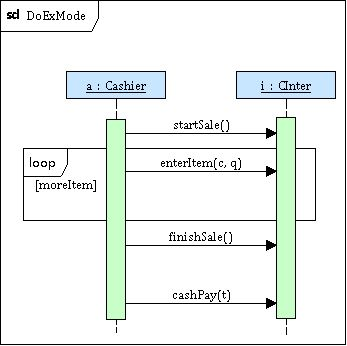
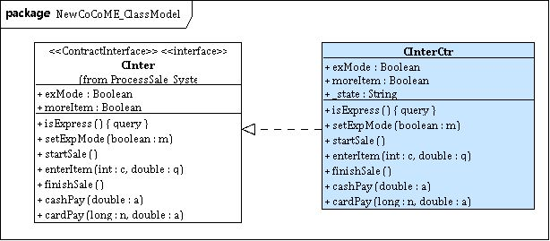

We use the classic CoCoME example that describes a trading system typically used in supermarkets as the case study. One of the use cases, process sale, describes the check out process: a customer takes the products she wants to buy to a cash desk, the cashier records each product item, and finally the customer makes the payment.
Using the rCOS Modeler, the use case is modeled by an interface CInter of a component ProcessSale.
The operation signatures and properties of the interface CInter:
The system sequence diagram
CInter_sequence, along with other three
referred sequence diagrams, describes the
scenario of the use case.
|  |
From the view of the sequence diagram CInter_sequence, select "Generate State Diagram" to generate a UML protocol state machine for the interface.
From the view of the state machine, select "Labeling state machine":
From the interface and its protocol, we generate a controller class CInterCtr as an implementation of the interface.

Links:
QVT-R model for the transformations.
The generated XSLT stylesheet for SeqD to SM transformation (including XSLT stylesheet) .
The generated XSLT stylesheet for labeling SM (including XSLT stylesheet)
The generated XSLT stylesheet for producing pre/post conditions
case study model before transformations